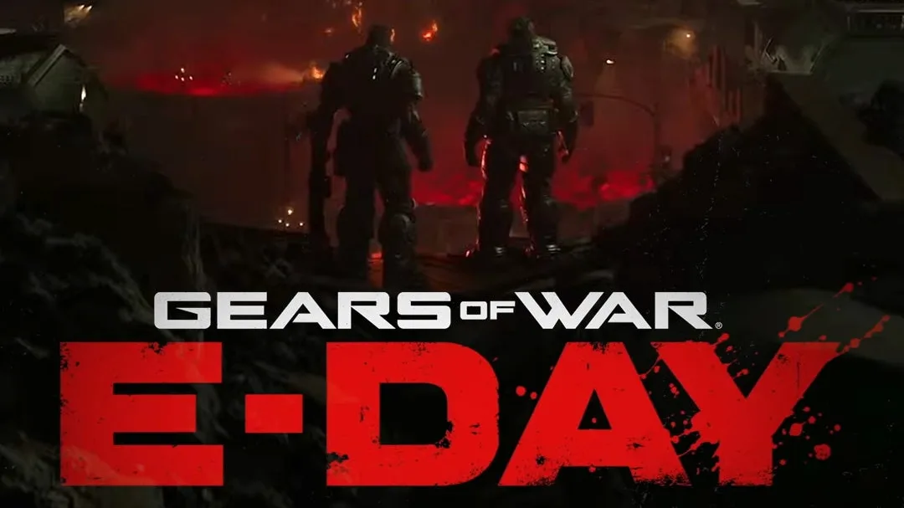

Luiso · 23 de septiembre de 2026 · 2 min de lectura
La nueva ronda de despidos de Microsoft también afectó a The Coalition, el estudio responsable de Gears of War: E-Day. Juan Vaca, director narrativo del proyecto, confirmó a través de sus perfiles profesionales que perdió su puesto como parte de la reestructuración anunciada por Xbox.
La noticia se conoció apenas unos días después de que el desarrollador celebrara públicamente que el juego había alcanzado la fase conocida como “gone gold”, una expresión utilizada en la industria para señalar que una versión destinada a la fabricación o distribución final está lista.
Vaca se incorporó a The Coalition en 2022 y participó en el desarrollo narrativo de Gears of War: E-Day. De acuerdo con la información disponible en su perfil profesional, su trabajo incluía la coordinación de equipos narrativos y la colaboración con distintas áreas del estudio para llevar la historia desde su concepto inicial hasta su ejecución.
Tras confirmar el despido, el desarrollador indicó que se encuentra abierto a nuevas oportunidades en los sectores de videojuegos, cine y televisión.
La situación se produce poco antes del lanzamiento del título, previsto para el 6 de octubre de 2026 en Xbox y Steam.
Por el momento, no se conoce públicamente cuántos empleados de The Coalition fueron afectados por esta ronda de recortes. La confirmación de Vaca demuestra que el estudio se encuentra entre los equipos alcanzados por la reorganización, pero no permite determinar por sí sola el alcance total de las medidas dentro del desarrollador.
Tampoco hay información pública que indique que el despido haya provocado cambios en la fecha de lanzamiento o en el contenido final de Gears of War: E-Day.
El proyecto se presenta como una precuela de la saga y estará ambientado durante el denominado Día de la Emergencia, un acontecimiento central en la historia de Gears of War. El juego estará protagonizado por Marcus Fenix y Dom Santiago.
El caso de Juan Vaca se suma a una serie de despidos que han afectado a numerosos estudios durante los últimos años. En esta ocasión, la particularidad está en que la confirmación se produjo cerca del lanzamiento de un proyecto en el que el desarrollador había trabajado durante varios años.
La finalización de un videojuego no garantiza la continuidad laboral de todas las personas involucradas en su desarrollo. Las decisiones de reorganización empresarial pueden afectar incluso a equipos que se encuentran cerca de completar un proyecto.